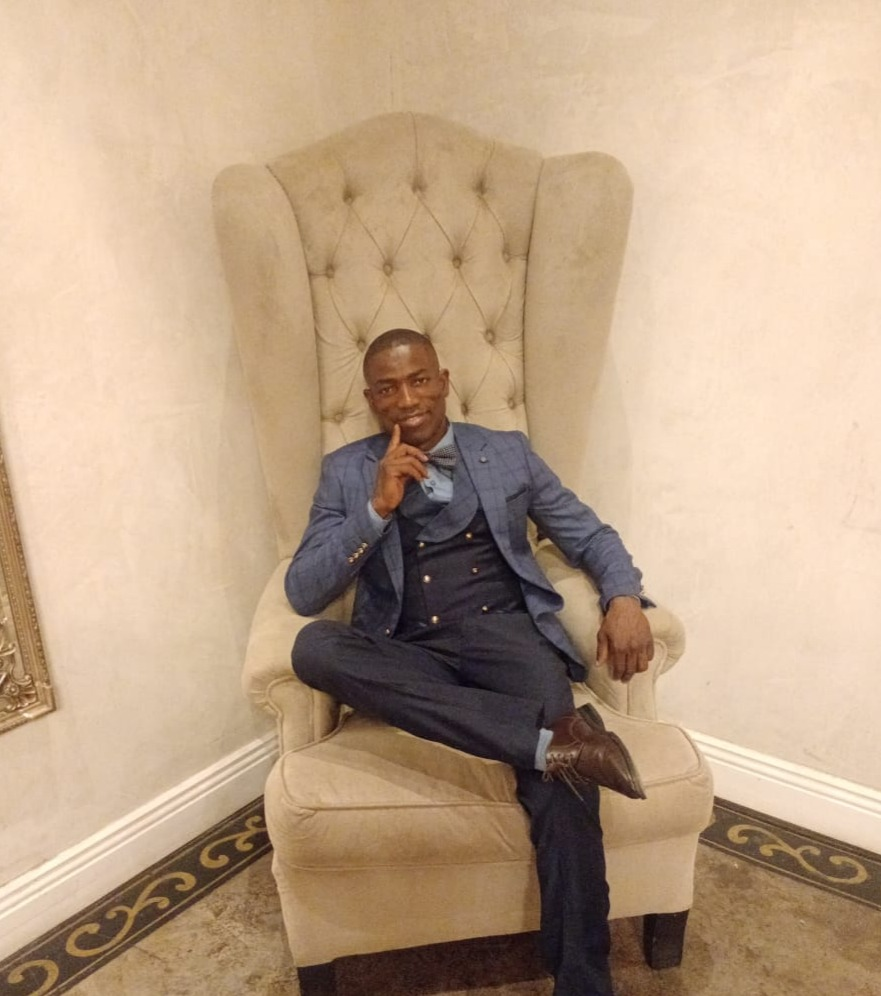

Daniel Mukonda | WDD 130
Hello, my name is Daniel Mukonda from Johannesburg, South Africa. I enjoy working with and empowering underserved communities through access to quality education and mentorship. Growing up in a disadvantaged community and learning skills under difficult circumstances inspired me to help young people. I use my skills to train, coach, and inspire young people—especially those lacking father figures—to build strong values, grow with purpose, and lead meaningful lives. By helping them become leaders in their own communities, I aim to spark a cycle of positive change that empowers others in turn.